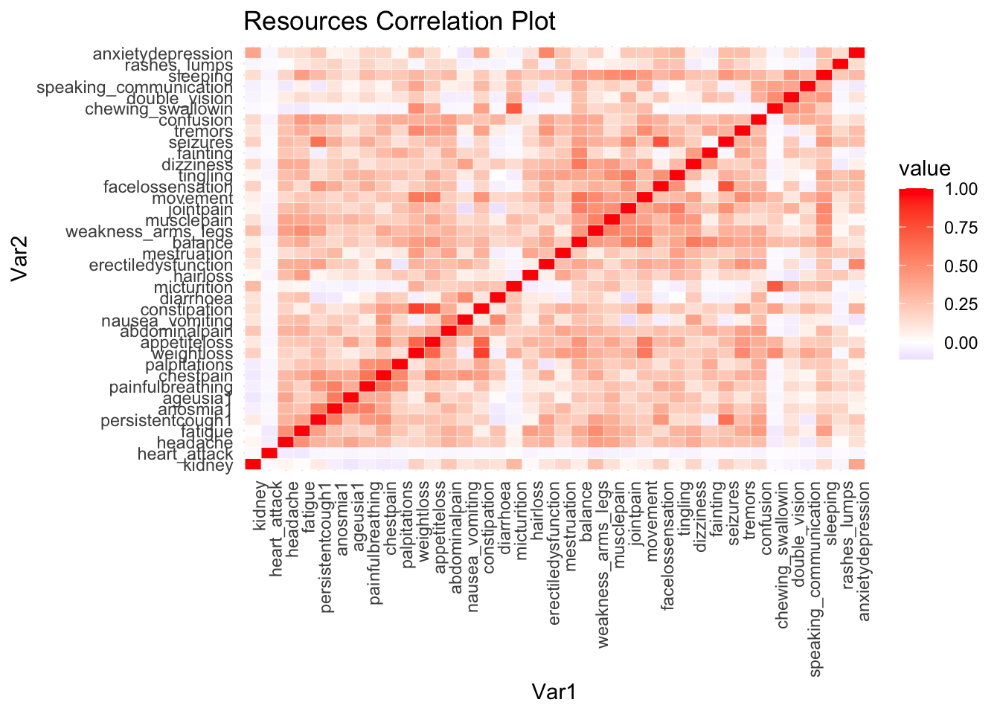
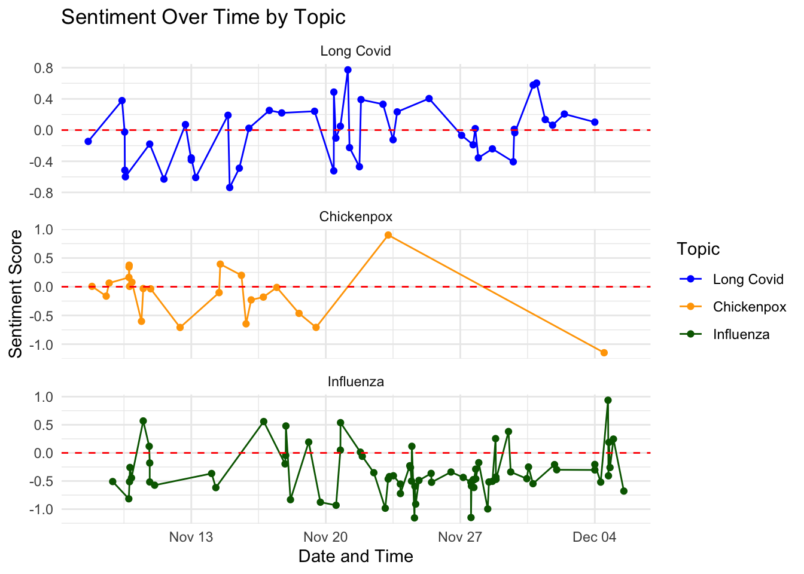
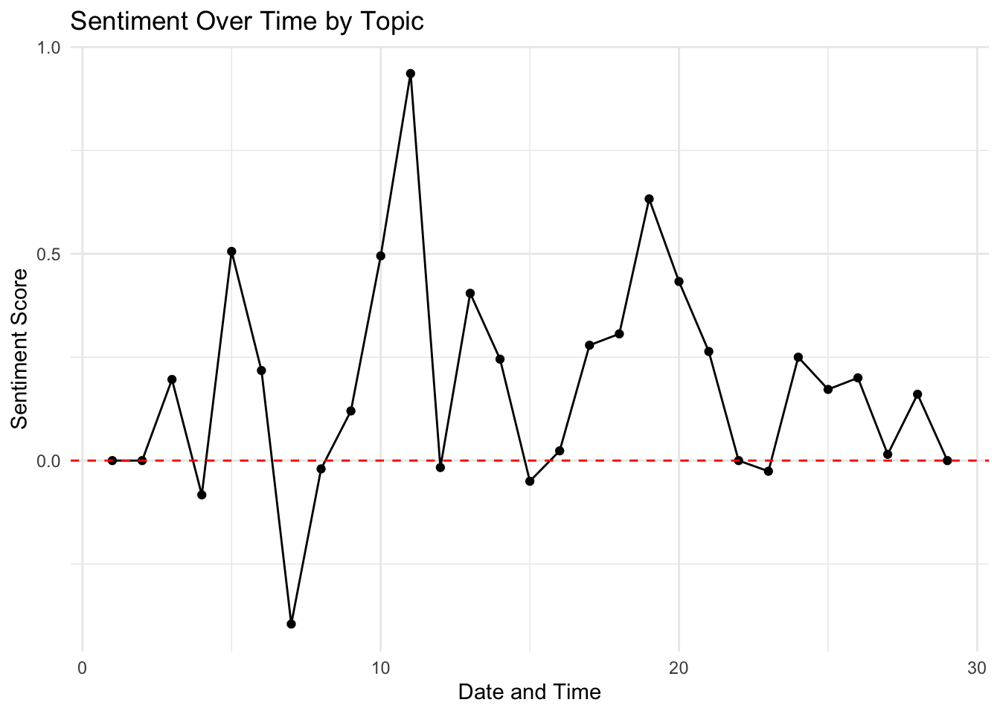

Exploratory Data Analysis (EDA), also called Data Exploration, stands as a pivotal cornerstone of data science, serving as a compass that guides analysts through the cleaned data. At its essence, EDA is a process that unveils the inherent patterns, outliers, and hidden insights within a dataset. By employing statistical and visual techniques, we will foster an intimate understanding of the underlying structure and nuances of the data. EDA empowers decision-makers with the ability to formulate informed hypotheses, identify potential pitfalls, and refine the scope of subsequent analyses. In the analysis of Long Covid, we will visualize symptom data from a meriad of sources in order to identify which symptoms are the most prevelant, what demographics are experiencing these symptoms, and relationships between demographics and symptoms. Additionally, EDA will help us to gain an understanding of the sentiment in media coverage as well as the sentiment of the President’s memoradum on Long Covid.
CDC - Long Covid
Our Long Covid dataset consists of survey statistics from a long covid survey conducted by the CDC. In this survery, we can see that users were asked to fill out a mutliple of demographic questions and then choose which long covid experience best decribing them. Let’s take a look at the cleaned data.
group state subgroup ... lowci highci key
0 National Estimate United States United States ... 13.5 14.5 1
1 Age United States 18 - 29 years ... 15.9 19.8 1
2 Age United States 30 - 39 years ... 14.1 16.2 1
3 Age United States 40 - 49 years ... 15.7 18.3 1
4 Age United States 50 - 59 years ... 14.1 16.7 1
[5 rows x 11 columns]
Thus far, we can see some of the important columns to take a further look at are group, subgroup, value, and key. Firstly, let’s look at the distribution of the value (percent having Long Covid based on the key’s defintion) grouped by each key.
From the boxplots, we can see that the distribution across keys is varying, with the highest percentage going to key 6, representing the percentage of adults with any activity limitations from long Covid who also currently have long Covid. The lowest range of values goes to key 9, which represents the percentage of adults of significant activity limitations.
Thus, to understand this data further, we’ll take a look at the additional groups affected by Long Covid in a number of ways.
Let’s take a look at the data through each group and it’s given subgroups. Primarily, amongst all Long Covid patients surveyed through the CDC, we can see that the largest age group surveyed was those age 40-49. Additionally, more females responded to the survey than males. In terms of gender and sexuality, cis-gender females and transgender people had a higher experience with long Covid than cis-gender males and bisexual individuals had a greater percentage of long covid experiences. A few other things to note, those in the category “non-Hispanic, other races and multiple races” were highest amongst the ethnicity demographics and not surprisingly, the highest disparity amongst the subcategories was between those who were disabled verses not disabled. Those with a disability had a 12.2% increase in long covid experiences than those who do not have a disability. The is very important to understanding Long Covid, as it has been known to effect those with disabilities more than it say with non-immunocompromised people.
Lastly, we’ll take a look at the overall distributions for each key value in order to understand the survey in greater detail.
For all subgroups and the dataset as a whole, we can see that the distributions are all rightly skewed. This indicates that most of the percentages collected all fell closer to zero. Since this dataset is heavily filled with categorical data, we will try to develop a way to pare down the features through naive bayes analysis and feature selection within the next section.
UK Symptoms Survey
The following dataset was measured to UK survey and app data regarding symptoms tracked for patients with Long Covid. In order to understand the distribution of the data and track the symptoms over time, we can take a look at the following.
Some important features to look at in the data set are symptom, which are the symptoms people tracked in the survey, domain and group, which act similarly to the group and subgroup from the CDC data, and estimate, which is the corresponding percentage of the those who filled out the survey. If we to extrapolate from the survey data, we could also use the lower and upper confidence boundaries.
In order to understand the dataset and the symptoms, let’s take a look at the symptoms for all people that filled out the survey. The interactive bubble plot above shows the CRIS survey data for multiple demographics and sub demographics. Using the filtering option, you can choose which demographic’s symptoms you’d like to view and the percent of each symptom out of the entire CRIS participant population. Thus, we can notice a few things. Across all demographics, cough, weakness/tiredness, shortness of breath, and joint pain were the highest recorded symptoms. Additionally, in terms of ethnic groups, non-white populations seem to have higher worry or anxiety and trouble sleeping in comparison to their white counterparts. This could be due to a number of socioeconomic factors, however, it’s still a very telling discover. Lastly, another thing to note is that much of the popular symptoms tracked across all demographics are mental (difficulty, worry or anxiety, and feelings of weakness). This is interesting to note since many, from an anecdotal perspective, experience these symptoms after COVID and do not identify as having Long Covid. Thus, it would be interesting to examine if mental side effects are a direct sign Long Covid post COVID diagnosis.
Harvard Long Covid Survey
The Harvard Long Covid survey provides a great resource to look at a variety of symptoms that one may have due to Long Covid. To further understand this dataset, we’ll first view a glimpse of the cleaned dataset (for more information on the cleaning, please visit the Data Cleaning tab).
df <-read_csv("../../data/01-modified-data/harvard_long_covid_cleaned.csv")df <- df %>%select(kidney:anxietydepression) %>%select(-sob1)correlation_matrix2 <-cor(df, use ="complete.obs")correlation_matrix2 <- reshape2::melt(correlation_matrix2)ggplot(correlation_matrix2, aes(x = Var1, y = Var2, fill = value)) +geom_tile(color ="white") +scale_fill_gradient2(low ="blue", mid ="white", high ="red", midpoint =0) +theme_minimal() +labs(title ="Resources Correlation Plot") +theme(axis.text.x =element_text(angle =90, hjust =1))

Here we can see that there are 52 columns of potential symptoms of those surveyed as well as the individuals demographic information. To answer one of our data science questions, we can look to the sex variable to see the differences in symptoms between the categories. Below is a visualization of the symptoms categorized by sex.
From this stacked bar plot, we can see a number of interesting things about the symptoms. For starters, symptoms of trouble chewing/swallowing and heart attacks are exclusive to the men survey in this study. Additionally, women exclusively experience hair loss as a result of Long Covid. As we previously saw stress, worry, and anxiety being popular symptoms of Long Covid, we can deduce that hair loss may be an exogenous to overall stress of Long Covid. Additionally, on average, it appears that women are more likely to have headaches, muscle pain, weakness in the arms, and ageusia (the loss of taste). For men, on average, they are more likely to experience anxiety or depression, general covid complications, and hospitalization due to the severity of their symptoms. From these insights, we can say that men may be more likely to experience mental health problems as a result of long covid. However, given that these survey results are self-reported, we will need to look at the other datasets to make a more inferred conclusion.
Long Covid News
Long Covid News can be difficult to interpret. Our goal is to conduct a sentiment analysis on the media collected regarding Long Covid as well as other infectious diseases like chickenpox and influenza. Thus, to conduct this analysis, we’ll first need to
library(sentimentr)news <-read.csv("../../data/01-modified-data/news_clean.csv")news$sentiment_score <- sentimentr::sentiment_by(news$all_text)$ave_sentimentnews <- news %>%mutate(sentiment =ifelse(sentiment_score >=0, "positive", "negative"))news$publishedAt <-as.POSIXct(news$publishedAt, format ="%Y-%m-%dT%H:%M:%SZ")news <- news %>%mutate(topic =factor(topic, levels =c(1, 2, 3), labels =c("Long Covid", "Chickenpox", "Influenza"))) news_tibble <-as_tibble(news)# Define a color palette for topicstopic_colors <-c("Long Covid"="blue", "Influenza"="darkgreen", "Chickenpox"="orange")# Create a line plotggplot(news_tibble, aes(x = publishedAt, y = sentiment_score, color = topic)) +geom_line() +geom_point() +facet_wrap(~topic, scales ="free_y", ncol =1) +labs(title ="Sentiment Over Time by Topic",x ="Date and Time",y ="Sentiment Score",color ="Topic") +theme_minimal() +geom_hline(yintercept =0, linetype ="dashed", color ="red") +scale_color_manual(values = topic_colors)

Code
# Display the DataFramehead(news)
id name author
1 bbc-news BBC News https://www.facebook.com/bbcnews
2 abc-news-au ABC News (AU) Brooke Chandler
3 time Time Jamie Ducharme
4 new-scientist New Scientist
5 cbc-news CBC News
6 time Time Steven Phillips and Michelle Williams
title
1 Wiltshire Long Covid patient says they have 'no support'
2 Long COVID research offers 'light at the end of the tunnel', finding symptoms ease over time
3 Getting Vaccinated May Be Your Best Protection from Long COVID
4 Governments must stay in it for the long haul on long covid research
5 'What I want are recovery narratives': CBC Radio host Gill Deacon on life with long COVID
6 How to End the Futile Blame Game Over Failed Long COVID Research
description
1 Ursula Wick, who was hospitalised in 2021, is still living with the effects of the virus.
2 Giuliano Gaspri spent eight months in hospital with COVID. He's part of a study of long COVID patients which hasn't found the cause, but did find life can return to normal with time.
3 People who got at least one COVID-19 vaccine before getting sick are 4 times less likely to get Long COVID, a new study says.
4 Lingering symptoms after a covid-19 infection remain a problem for millions of people. Nations need to renew efforts to find treatments for them and help prevent yet more cases
5 "It can be a challenge to stay present, to not grieve what I have lost or bemoan what has befallen me. I take it, as the banal but truthful platitude goes, one day at a time," writes CBC Radio Here & Now host Gill Deacon.
6 A pair of public health experts argue that the current approach to Long COVID research is failing, and offer a radical new paradigm.
url
1 https://www.bbc.co.uk/news/uk-england-wiltshire-67373381
2 https://www.abc.net.au/news/2023-12-02/long-covid-study-still-suffering-but-some-hope/103173430
3 https://time.com/6338434/vaccination-long-covid-risk/
4 https://www.newscientist.com/article/mg26034673-200-governments-must-stay-in-it-for-the-long-haul-on-long-covid-research/
5 https://www.cbc.ca/news/canada/toronto/gill-deacon-long-covid-recovery-narratives-1.7046731
6 https://time.com/6335177/long-covid-research-failure/
publishedAt
1 2023-11-11 13:52:07
2 2023-12-01 19:15:00
3 2023-11-22 23:30:00
4 2023-11-29 18:10:00
5 2023-12-02 10:00:00
6 2023-11-15 12:00:00
content
1 A woman suffering from long Covid said she has been left with "no support".\nUrsula Wick, from Swindon, struggles with tiredness, aches, pains and a loss of strength after contracting the virus and b… [+1825 chars]
2 Before Giuliano Gaspri caught COVID-19, he was climbing up transmitter towers overlooking the New South Wales Illawarra region as part of his full-time maintenance job.\nKey points:\n<ul><li>Study pa… [+5144 chars]
3 People vaccinated before their first case of COVID-19 are diagnosed with Long COVID almost four times less than unvaccinated people, suggests a large new study published Nov. 22 in the BMJ.\nThats no… [+3414 chars]
4 Bryan Olin Dozier/NurPhoto/Shutterstock\nIT HAS been nearly four years since the covid-19 pandemic began, and many of us would love to forget all about it. But there are millions for whom that is imp… [+442 chars]
5 Gill Deacon is the host of CBC Radio's Here & Now. She went on leave in December 2022. This piece is about her ongoing absence.\n"How's work?"\nThe cashier is a former neighbour, someone I haven'… [+8212 chars]
6 The health outlook for Long COVID sufferers is no better today than it was when the condition was first recognized in early 2020. This has been attributed in large measure to the disappointing result… [+8549 chars]
topic
1 Long Covid
2 Long Covid
3 Long Covid
4 Long Covid
5 Long Covid
6 Long Covid
all_text
1 wiltshire long covid patient says they have no support ursula wick who was hospitalised in 2021 is still living with the effects of the virus a woman suffering from long covid said she has been left with no support ursula wick from swindon struggles with tiredness aches pains and a loss of strength after contracting the virus and
2 long covid research offers light at the end of the tunnel finding symptoms ease over time giuliano gaspri spent eight months in hospital with covid hes part of a study of long covid patients which hasnt found the cause but did find life can return to normal with time before giuliano gaspri caught covid19 he was climbing up transmitter towers overlooking the new south wales illawarra region as part of his fulltime maintenance job key points ullistudy
3 getting vaccinated may be your best protection from long covid people who got at least one covid19 vaccine before getting sick are times less likely to get long covid a new study says people vaccinated before their first case of covid19 are diagnosed with long covid almost four times less than unvaccinated people suggests a large new study published nov 22 in the bmj thats
4 governments must stay in it for the long haul on long covid research lingering symptoms after a covid19 infection remain a problem for millions of people nations need to renew efforts to find treatments for them and help prevent yet more cases bryan olin it has been nearly four years since the covid19 pandemic began and many of us would love to forget all about it but there are millions for whom that is
5 what i want are recovery narratives cbc radio host gill deacon on life with long covid it can be a challenge to stay present to not grieve what i have lost or bemoan what has befallen me i take it as the banal but truthful platitude goes one day at a time writes cbc radio here now host gill deacon gill deacon is the host of cbc radios here amp now she went on leave in december 2022 this piece is about her ongoing absence hows work the cashier is a former neighbour someone i
6 how to end the futile blame game over failed long covid research a pair of public health experts argue that the current approach to long covid research is failing and offer a radical new paradigm the health outlook for long covid sufferers is no better today than it was when the condition was first recognized in early 2020 this has been attributed in large measure to the disappointing
sentiment_score sentiment
1 -0.62915287 negative
2 0.06267832 positive
3 0.33125000 positive
4 -0.40686674 negative
5 0.20618111 positive
6 -0.48867778 negative
Using the R package sentimentr, I calculated the sentiment score for each article. From there we grouped the data by each infectious disease (Long Covid, chickenpox, and influenza) and plotted the sentiment score over time. The results of this analysis show that the strength in which Long Covid is talked about in media, both positive and negative, is less than influenza and chickenpox, with the absolute strength on both sides being approximately 0.8. In comparison, chickenpox had both positive and negative articles with strength close to 1. Additionally, chickenpox had articles clustered to zero in the beginning, indicating neutral reporting. However, as time progressed, we see drastic shifts in sentiment. Influenza and Long Covid, however, see a continuous fluctuation in sentiment, with influenza have higher strength in sentiment, especially with negative works. Thus, from this sentiment analysis, we can say that Long Covid seems to be the most neutral in comparison to the two other infectious diseases chosen.
Presidential Address
Similarly to the News articles on Long Covid, we can take a look at the text data of the White House’s official statement on its efforts to confront and treat long covid through a frequency analysis. Creating a word cloud is one way to visualize the text.
gov <-read.csv("../../data/01-modified-data/white_house_df_clean.csv")gov$sentiment_score <- sentimentr::sentiment_by(gov$Text)$ave_sentimentgov <- gov %>%mutate(sentiment =ifelse(sentiment_score >=0, "positive", "negative")) %>%mutate(time =seq_len(n()))gov_tibble <-as_tibble(gov)# Create a line plotggplot(gov_tibble, aes(x = time, y = sentiment_score)) +geom_line() +geom_point() +labs(title ="Sentiment Over Time by Topic",x ="Date and Time",y ="Sentiment Score") +theme_minimal() +geom_hline(yintercept =0, linetype ="dashed", color ="red")

Code
# Display the DataFramehead(gov)
Text
1 memorandum on addressing the longterm effects of covid19april 05 2022memorandum for the heads of executive departments and agencies
2 subject addressing the longterm effects of covid19
3 by the authority vested in me as president by the constitution and the laws of the united states of america it is hereby ordered as follows
4 section policy my administration has made combating the coronavirus disease 2019 pandemic and guiding the nation through the worst public health crisis in more than a century our top priority when i came into office covid19 was wreaking havoc on our country closing our businesses keeping our kids out of school and forcing us into isolation today america has the tools to protect against covid19 and to dramatically decrease its risks we move towards a future in which covid19 does not disrupt our daily lives and is something we prevent protect against and treat
5 as we chart the path forward we remember the more than 950000 people in the united states lost to covid19 they were beloved parents grandparents children siblings spouses neighbors and friends more than 200000 children in the united states have lost a parent or caregiver to the disease each soul is irreplaceable and the families and communities left behind are still reeling from profound loss many families and communities have already received support from federal programs that help with the loss they have experienced as we move forward we commit to ensuring that families and communities can access these support programs and connect to resources they may need to help with their healing health and wellbeing
6 at the same time many of our family members neighbors and friends continue to experience negative longterm effects of covid19 many individuals report debilitating longlasting effects of having been infected with covid19 often called long covid these symptoms can happen to anyone who has had covid19 including individuals across ages races genders and ethnicities individuals with or without disabilities individuals with or without underlying health conditions and individuals whether or not they had initial symptoms individuals experiencing long covid report experiencing new or recurrent symptoms which can include anxiety and depression fatigue shortness of breath difficulty concentrating heart palpitations disordered sleep chest and joint pain headaches and other symptoms these symptoms can persist long after the acute covid19 infection has resolved even young people and otherwise healthy people have reported long covid symptoms that last for many months these symptoms may be affecting individuals ability to work conduct daily activities engage in educational activities and participate in their communities our worldclass research and public health organizations have begun the difficult work of understanding these new conditions their causes and potential prevention and treatment options our health care and support programs are working to help meet the needs of individuals experiencing the lasting effects of covid19 to organize the federal governments response executive departments and agencies must work together to use the expertise resources and benefit programs of the federal government to ensure that we are accelerating scientific progress and providing individuals with the support and services they need
sentiment_score sentiment time
1 0.00000000 positive 1
2 0.00000000 positive 2
3 0.19611614 positive 3
4 -0.08295614 negative 4
5 0.50575634 positive 5
6 0.21780522 positive 6
Our sentiment analysis of the White House’s Presidential Memorandum on Long Covid over the course of the document is shown in the graph above. From this graph, we can see that the document takes on a positive sentiment for the majority of the writing. There is an exception in the seventh paragraph, with the sentiment being approximately -0.5. Looking back at the paragraph, we can see that the president discusses the growing pains of the nation due to the COVID-19 pandemic in regards to the mental health crisis, lack of childcare and education, as well as the grief of the country over the millions lost to the disease. However, the tone of the memorandum changes as President Biden addresses the nations courage and resilience, as well as the steps being taken to combat Long Covid. Overall, we can say that the White House presented the country with a positive message on Long Covid in the midst of a divided nation.